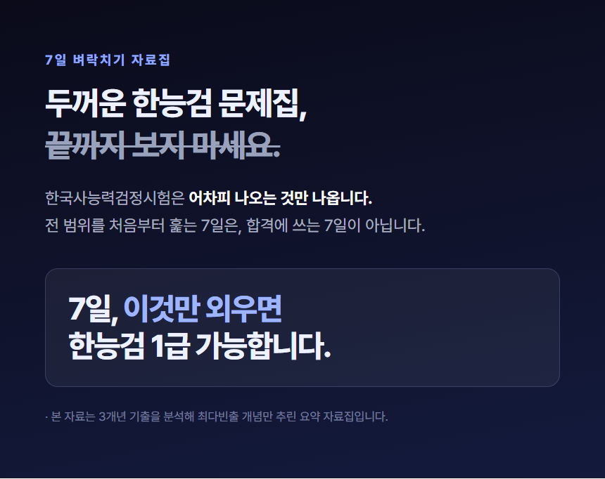
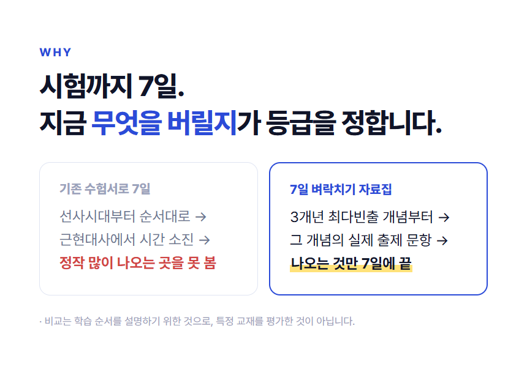
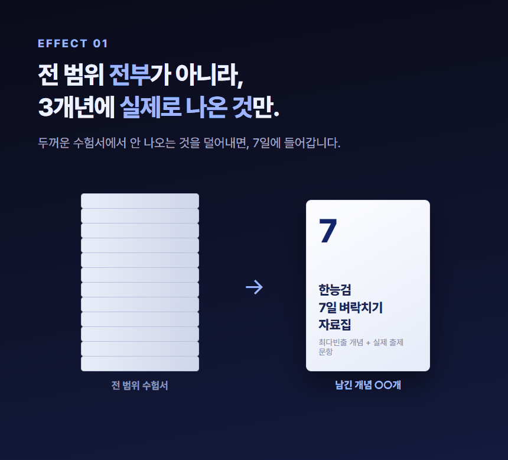
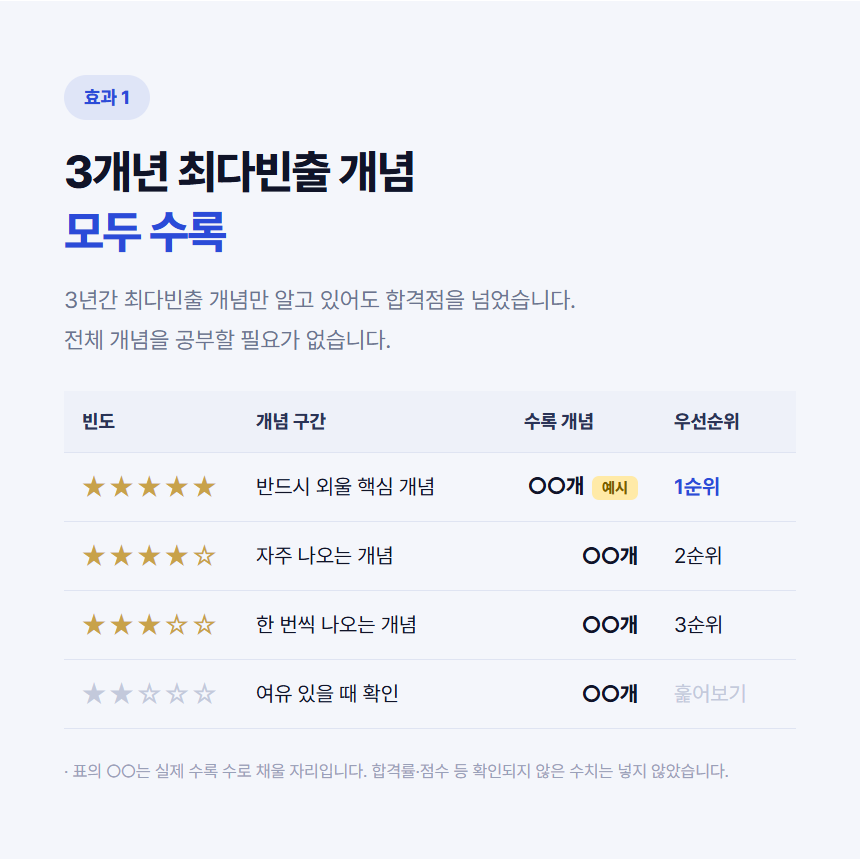
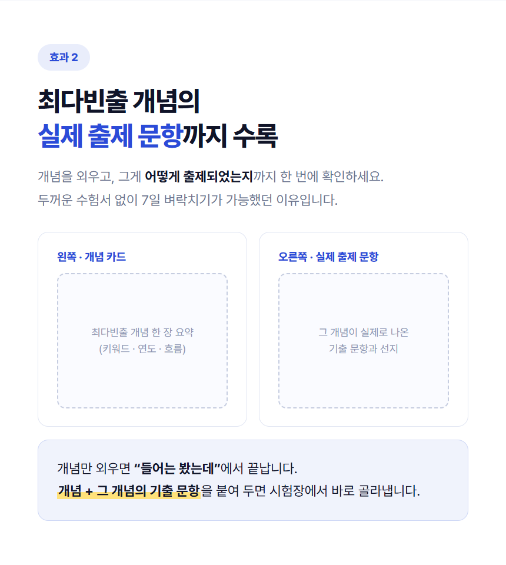
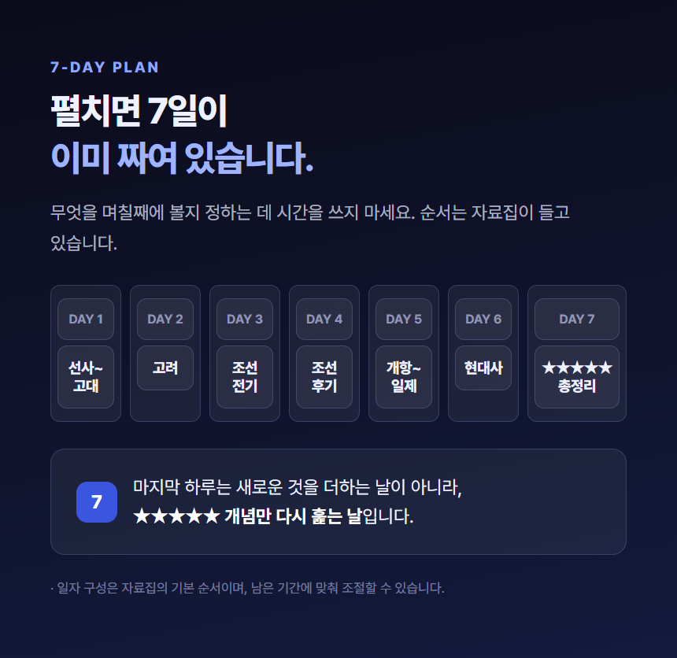
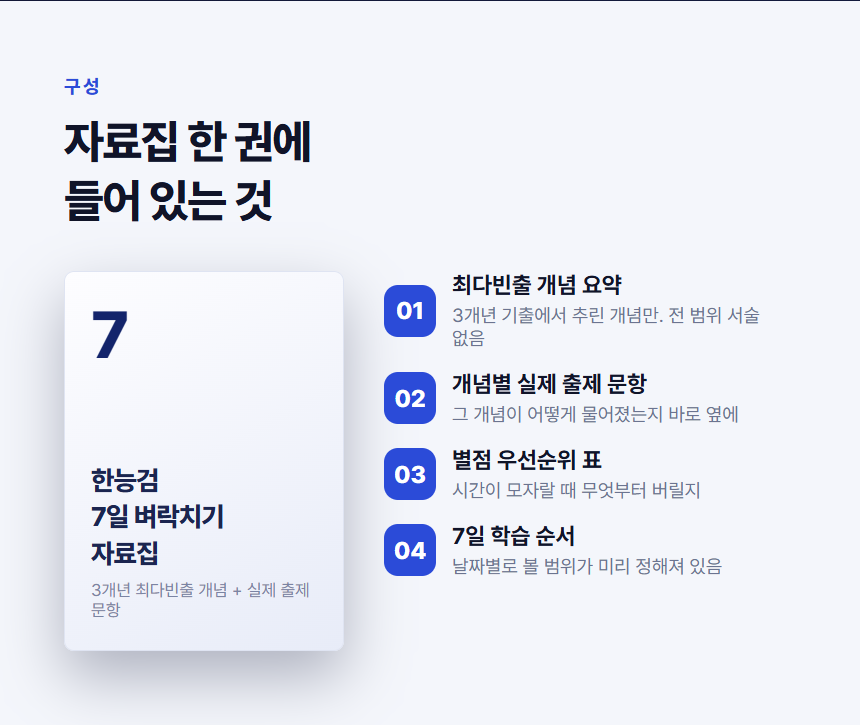
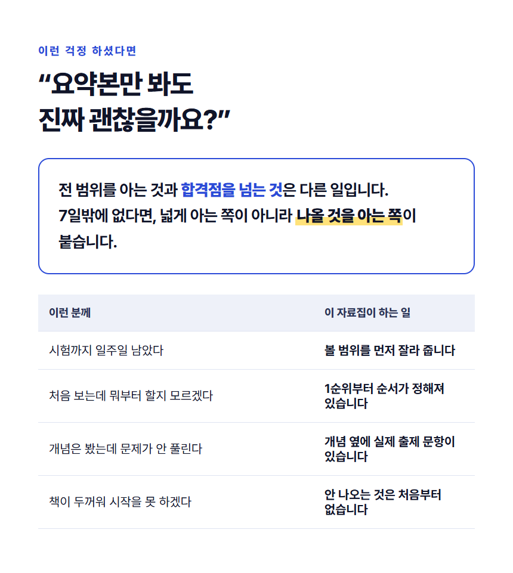
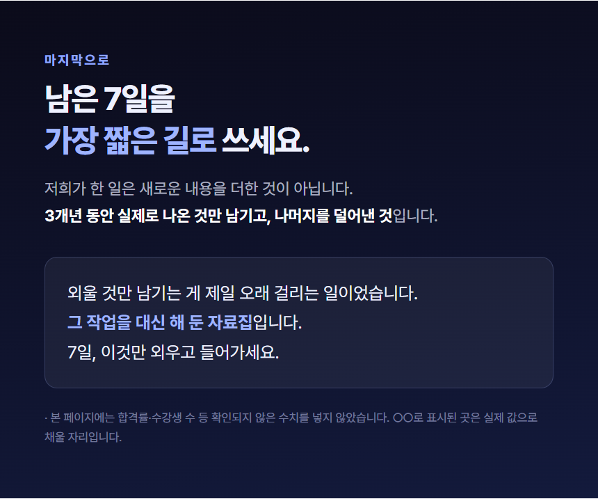

조현준 · 2026.10.28 제출
레퍼런스(수능 국어 출제예측 자료)를 캡처 34장 기준으로 위에서 아래로 끊어 17개 섹션으로 읽었습니다. 한 줄로 요약하면 “희소성으로 멈춰 세우고 → 권위로 믿게 하고 → 적중으로 증명하고 → 구성으로 안심시키고 → 편지로 닫는다” 입니다.
| # | 섹션 | 구매자를 어떻게 설득하는가 | 움직임 |
|---|---|---|---|
| 01 | 상품 상단 구매 영역 | 가격·주문 수를 먼저 보여 주고 “만점자's PICK” 배지로 첫인상에 권위를 붙임 | 정지 |
| 02 | 실물 전량 품절 안내 | 희소성. 지금 사는 것이 늦은 선택이 아니라는 안심 + 재고 압박 | 정지 |
| 03 | 공식 판매처 확인 배너 | 정품 권위. 가짜를 경계하게 만들어 판매자를 유일한 선택지로 만듦 | 정지 |
| 04~06 | 만점자 인터뷰 + 인용 | 인물 권위. 표준점수·대학명을 숫자로 못 박고 영상으로 실재감을 줌 | GIF |
| 07 | 상위 0.01% 원픽 | 집단 증명. 한 명이 아니라 상위권 다수가 고른 자료라는 인상 | 정지 |
| 08 | “추천하는 이유는?” | 질문 전환. 자랑을 멈추고 독자가 스스로 이유를 궁금해하게 만듦 | 정지 |
| 09~10 | 출제연계 연구 + 재학생 인용 | 반론 처리. “다른 곳은 다 중요하다고 한다”는 불만을 먼저 말하고 별 5단계로 해소 | 정지 |
| 11~12 | 예측표 본체 + 별점 등급표 | 제품화. 추상적 주장을 ‘별점으로 정리된 표’라는 물건으로 바꿔 보여 줌 | 정지 |
| 13~15 | 적중 CASE 01·02·03 | 증명의 핵심. 교재 지문과 실제 출제 지문을 나란히 놓고 “적중” 도장 | 정지 |
| 16~20 | 구매자 후기 영상·인용 | 사회적 증명. 점수대가 다른 여러 명을 세워 “나와 비슷한 사람”을 찾게 함 | 정지 |
| 21~22 | 합격생의 선택 + 4단계 목차 | 구조 예고. 이제부터 무엇을 설명할지 번호로 먼저 보여 줌 | 정지 |
| 23~26 | 구성 01~04 상세 | 구성 설명. 분석 카드·중요도 분류를 펼쳐 ‘두께의 근거’를 제시 | 정지 |
| 27~28 | No.1 수치 블록 | 수치 권위. 분석 편수·적중 편수를 큰 숫자로 압축 | 정지 |
| 29~31 | 구매 만족도 설문 | 만족 증명. 추천 이유를 항목별 비율로 환산 | 정지 |
| 32~33 | 대치동 학원 제공 자료 | 출처 희소성. “원래 재학생만 받던 것”이라는 접근 제한을 가치로 전환 | 정지 |
| 34 | 집필진 편지 | 신뢰·진정성. 판매 톤을 낮추고 “덜어내 드리는 일”이라는 제작 의도로 닫음 | 정지 |
| 35 | Q&A | 남은 의심을 마지막에 정리 | 정지 |
가로 860px · PNG 8장 + GIF 1장. 아래는 실제 제출 이미지를 위에서 아래로 이어 붙인 것입니다.









| 요소 | Before (레퍼런스) | After (우리 상품) | 연결되는 소구점·효과 |
|---|---|---|---|
| 상단 한 줄 | 수능 국어 표준점수 140점 | EFFECT 01 | 효과 1 |
| 헤드라인 | 2026 수능 국어영역 만점자 연세대 선배의 선택 | 전 범위 전부가 아니라, 3개년에 실제로 나온 것만 | 소구점(어차피 나오는 것만) |
| 영상 ① | 인터뷰 영상이 재생 | 두꺼운 수험서 더미에서 종이가 한 장씩 사라짐 | 소구점(두꺼운 책 보지 마세요) |
| 영상 ② | 두 번째 인터뷰 영상 | 얇은 자료집에 ★★★★★ ‘최다빈출’ 도장이 찍힘 | 효과 1 |
| 하단 인용 | “성지순례하러 올걸요?” | “7일, 이것만 외우면 됩니다” | 소구점(7일 1급) |
| 요소 | Before (레퍼런스) | After (우리 상품) | 연결되는 소구점·효과 |
|---|---|---|---|
| 헤드라인 | 혁신시대 27년도 수능 출제 예측표 | 3개년 최다빈출 개념 모두 수록 | 효과 1 |
| 등급표 | ★4 정독 권장 / ★3 핵심 정리 / ★2 요약 확인 / ★1 훑어보기 | ★5 반드시 외울 / ★4 자주 / ★3 한 번씩 / ★2 여유 있을 때 | 효과 1 |
| 수치 칸 | 편수 숫자 | ○○개 + “예시” 배지 (확인 전 수치는 비워 둠) | — |
| 보조 문구 | 수특·수완·6·9월 연계 분석 | 3년간 최다빈출 개념만 알아도 합격점을 넘었습니다 | 소구점 |
| 요소 | Before (레퍼런스) | After (우리 상품) | 연결되는 소구점·효과 |
|---|---|---|---|
| 좌측 | 혁신시대 교재 · 예상 연계 양상 | 개념 카드 (키워드·연도·흐름 한 장 요약) | 효과 2 |
| 우측 | 실제 출제 · 6월 모의평가 18~21번 | 그 개념이 실제로 나온 기출 문항과 선지 | 효과 2 |
| 도장 | “6월 모의평가 출제 지문 적중!” | 넣지 않음 — 적중률을 뒷받침할 자료가 없어 지어내지 않음 | — |
| 하단 | CASE 01·02·03 반복 | “개념만 외우면 들어는 봤는데에서 끝납니다” | 효과 2 |
| 요소 | Before (레퍼런스) | After (우리 상품) | 연결되는 소구점·효과 |
|---|---|---|---|
| 반론 | “다른 곳은 거의 모든 작품에 등급이 매겨져 결국 다 봐야 하나” | “요약본만 봐도 진짜 괜찮을까요?” | 소구점 |
| 해소 | 별 5개 내외로 단계를 나누어 부담을 덜었다 | 전 범위를 아는 것과 합격점을 넘는 것은 다른 일입니다 | 소구점(7일 1급) |
| 인용 주체 | 연세대학교 재학생 B | 넣지 않음 — 실재하지 않는 후기를 만들지 않음 | — |
| 보조 | 34 문항 연계 지도 이미지 | “이런 분께 / 이 자료집이 하는 일” 4행 대조표 | 효과 1·2 |
| 요소 | Before (레퍼런스) | After (우리 상품) | 연결되는 소구점·효과 |
|---|---|---|---|
| 목차 | 01 연계 교재 231편 전수 분석 … 04 지문마다 체크 포인트 3개 | 01 최다빈출 개념 요약 … 04 7일 학습 순서 | 효과 1·2 |
| 상품 사진 | 예측표 실물 사진 + 펼친 내지 | 자료집 표지(숫자 7) 일러스트 | 소구점(7일) |
| 보조 설명 | 지문 해설·예상 연계 양상·체크 포인트 | 전 범위 서술 없음 / 개념 옆에 기출 / 무엇부터 버릴지 | 효과 1·2 |
| 요소 | Before (레퍼런스) | After (우리 상품) | 연결되는 소구점·효과 |
|---|---|---|---|
| 핵심 문장 | “예측은 알려 주는 일이 아닙니다. 한정된 시간을 어디에 먼저 쓸지…” | “새로운 내용을 더한 것이 아니라, 실제로 나온 것만 남기고 덜어낸 것입니다” | 소구점 |
| 마지막 한 줄 | “마지막 한 달은 더해 드리는 일이 아니라 정리 순서가 되어 드리는 일” | “외울 것만 남기는 게 제일 오래 걸리는 일이었습니다. 그 작업을 대신 해 둔 자료집입니다” | 소구점 |
| 서명 | 혁신시대 집필진 드림 | 넣지 않음 — 실제 집필진 정보가 없어 비워 둠 | — |
① 레퍼런스 34장을 6장씩 세로로 이어 붙여 한 번에 보고, 위에서 아래로 섹션을 끊어라. 섹션마다 "구매자를 어떻게 설득하는가"를 한 줄로 쓰고, 권위·증명·희소성·반론처리 중 무엇에 해당하는지 분류해라. GIF로 움직이던 자리는 따로 표시해라.
② 레퍼런스의 '만점자 영상' 섹션을 우리 상품으로 바꾼다.
인물·후기는 쓸 수 없으니 움직임의 '역할'만 가져와라.
그 자리가 하던 일은 "이 자료를 믿어도 된다"는 설득이다.
우리 상품에서 같은 일을 하는 움직임은 무엇인가?
→ 두꺼운 수험서가 얇아지는 과정을 보여 줘라. 소구점이 '덜어내기'이므로
덜어내는 동작 자체가 증명이 된다.
③ 상세페이지 카피에 합격률·수강생 수·후기를 절대 지어내지 마라. 레퍼런스에 숫자가 있던 자리는 ○○로 비우고 "예시" 배지를 붙여라. 확인되지 않은 수치를 넣느니 그 섹션을 통째로 빼라.
④ 모바일에서 읽히게 만들어라. 가로 860px 기준으로 본문 23px 이상, 헤드라인 42px 이상. 한 섹션에 메시지는 하나만. 글자가 7줄을 넘으면 표나 카드로 쪼개라.
| 시도한 것 | 버린 이유 |
|---|---|
| 적중 CASE 01·02·03 를 그대로 옮기기 | “적중” 도장은 실제 적중 기록이 있어야 성립합니다. 우리 상품에는 근거가 없어 증명 섹션 대신 ‘개념+기출 병치’ 설명 섹션으로 바꿨습니다. |
| 합격생 인터뷰 영상 자리에 후기 카드 넣기 | 실재하지 않는 후기를 만드는 일이라 과제 지침 위반입니다. 같은 자리를 제품 자체가 움직이는 GIF 로 채웠습니다. |
| “합격률 ○○%” 수치 블록 | ○○ 로 비워도 합격률이라는 항목 자체가 없는 수치를 암시합니다. 섹션을 통째로 뺐습니다. |
| GIF 를 인물 등장 연출로 만들기 | 인물 이미지가 필요해 불가. 종이가 줄어드는 물리적 변화로 바꾸니 소구점(덜어내기)과 움직임이 같은 말을 하게 됐습니다. |
| 섹션을 레퍼런스처럼 17개 전부 만들기 | 근거 없는 증명 섹션이 절반이라 남는 것이 적었습니다. 9개로 줄이되 설득 순서는 그대로 두는 쪽을 택했습니다. |
| 첫 GIF 저장 (팔레트 변환) | 프레임마다 팔레트를 따로 만들어 1프레임만 저장됐습니다. RGB 로 넘기고 PIL 이 변환하게 고쳤습니다. |